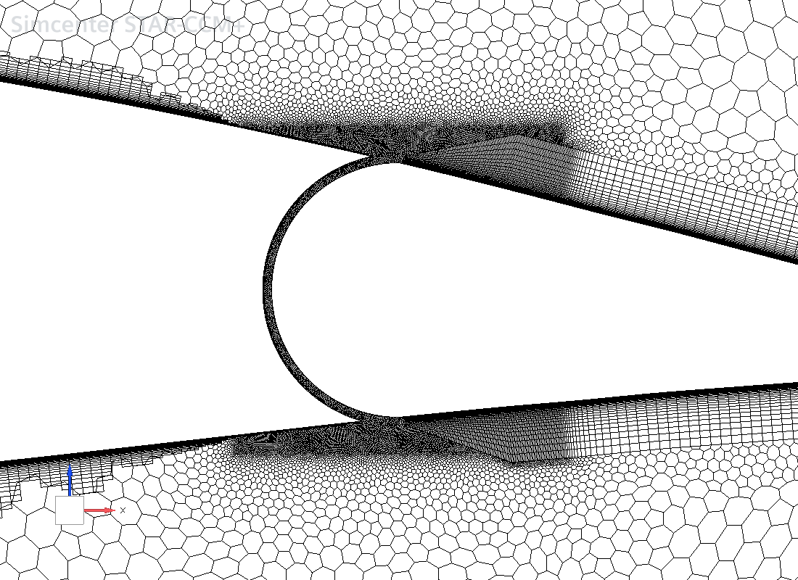

NTNU · ruchoma klapka — kampania hydrodynamiczna
Stan na 2026-11-02T20:26:01+01:00. STAR-CCM+ 2606.0002, build 21.04.009-R8. Kampania aktywna; raport jest aktualizowany z zapisanych plików.
NACA 66-012 modified z rodzimej geometrii C01; zawias x/c = 0,80, oś +y, szczelina nominalna 2,5 mm, rozpiętość 0,02 m. U = 18 m/s, ρ = 1000 kg/m³, μ = 0,001 Pa·s, Re = 2,142·10⁷, SST URANS.
Wyniki służą ocenie mechaniki i stabilizacji przepływu. Nie potwierdzono niezależności od siatki ani kroku czasu. Nie zatwierdzono danych do treningu. W04, kampania falowa i DRL nie są uruchamiane w tym zadaniu.
Wyniki i stan przypadków
CL odejmuje wypór hydrostatyczny; siły Fz i moment zawiasowy obejmują pełne obciążenie ciśnieniem. Moment raportowany na samej klapce, względem osi +y. Średnie z ostatniego okna 0,05 s; pmin jest minimum z całego zaakceptowanego przebiegu. *C01: minimum na płacie w zapisanym punkcie odniesienia, nie minimum z nowej historii URANS.
Kontrola siatki 2,5D
Końcowe komórki leżą w jednej warstwie między y = 0,01 i 0,03 m; centroidy mają y = 0,02 m. Naprawa wykorzystuje natywne wyciągnięcie przekroju i korektę orientacji ścian. Nie usuwano wadliwych komórek w celu ukrycia błędów.
Ustawiono 48 warstw przy profilu i 24 przy łuku zawiasu. Są to parametry generatora. Automatyczna detekcja warstw w siatkach directed/extruded ma ograniczenia opisane w dokumentacji STAR; sam wskaźnik Prism Layer Number nie potwierdza pełnej liczby warstw. Kontrolowane są też geometria warstw i y+ po uruchomieniu przepływu.
Ruch i łączność Overset
Przeszedł test 100 kroków, od −5° do +5°, czas fizyczny 0,2 s przy zamrożonym przepływie. Maksimum błędnych komórek Overset: 0; trudnych interpolacji: 0. Najmniejsza objętość podczas ruchu: 2.12e-12 m³. Interpolacja Linear quasi2D.
Plik .sim po pełnym teście ruchu · Animacja natywnej siatki

Zbliżenie na zawias i szczelinę, odtwarzanie spowolnione. To test mechaniki; przepływ hydrodynamiczny był zamrożony.

Historie czasowe


Kryteria i ograniczenia
- Statyczny URANS: dt = 2 ms po kontroli kontynuacji oryginalnego płata z dt = 0,4 ms. Co najmniej 0,2 s, trzy kolejne stabilne okna po 0,05 s; limit przebiegu 1 s.
- Zmiana średnich: CL < 0,5%, CD < 1%; rozstęp w oknie odpowiednio < 1% i < 2%. Względny bilans masy < 10⁻⁴. To kontrola stabilizacji sił, nie pełna walidacja hydrodynamiczna.
- Woda 20°C: ciśnienie pary 2339,215 Pa; wymagany zapas 10 kPa, czyli pabs > 12339,215 Pa. Badanie ciśnienia nie zastępuje modelu kawitacji.
- W SP_B wystąpiły lokalne obniżenia ciśnienia daleko od płata, przy górnej granicy x ≈ 27–37 m, z ≈ 7,7–7,8 m. Minimum na samym płacie pozostawało wyższe. Wymaga to uwagi przy dalszej ocenie zbieżności; zachowano konserwatywne minimum globalne.
- A/B zawiera wpływ zmiany geometrii i siatki. B/C ocenia dodatkowy wpływ Overset i jego siatki. A/C01 jest pomostem do VOF na oryginalnej siatce; nie wymaga się identycznych współczynników.
- Jednofazowy model nie potwierdza braku wentylacji ani wpływu powierzchni swobodnej. Referencyjna wysokość ciśnienia z = 2 m została zachowana.
Bieżące obliczenia i kolejność
- stabilize_20261102_195203: force_stabilization_passed
- steady_init_20261102_200834: Steady initialization 1500/1500 CL=0.3749038245767674 CD=0.006546321487845069 pabs_min=21492.172979954237 mass=6.82798556319405E-5
Po sprawdzeniu przypadku 0°: +2°, −2°, +5°, −5°. Testy sinusoidalne dopiero po poprawnych przypadkach statycznych. Nieudane i niedokończone próby pozostają diagnostyką.
Praca na F:\ntnu\flap_control. Oryginalne C01/W01/W03 i procesy PRE_W04 pozostają poza zakresem zmian tego zadania. Instrukcja wznowienia